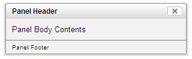
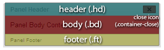
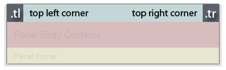
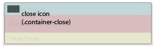
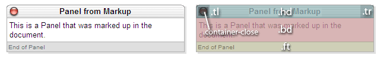

YUI Library Examples: Container Family: Skinning a Panel with Custom CSS: Introduction
Container Family: Skinning a Panel with Custom CSS: Introduction
In this example, custom CSS and images are applied to the appearance of a Panel instance to stylize it similar to a Mac OS X document window. Use the buttons below to show and hide the Panel.
Skinning the Panel Control with Custom CSS
Panels (and all other containers using Standard Module Format) can be skinned using CSS to customize the look and feel of each component. In order to best explain how to customize the Panel's style, it is important to first understand the structure of the basic Panel. The Panel, with the default Sam skin applied looks like this:

Breaking the Panel down into its basic Standard Module Format, its structure can be diagrammed as such:

Core CSS
Since we're modifying virtually every aspect of the default Sam skin look for the panel, we'll include container/assets/container-core.css as our base set of CSS rules, instead of container/assets/skins/sam/container.css.
This way, we don't have to reset the additional style properties which are applied to implement Sam skin's look and feel. Our Understanding YUI Skins article provides more information about skinning YUI components and the CSS files involved.
Adding Custom Skin CSS
The Panel, like all other YUI Container controls, has a header, body, and footer. In addition, the Panel also has a "close" element containing a background image to give it the appearance of a UI window close control. In this tutorial, we will manipulate the CSS styles for these elements and create several new elements to allow for additional pieces of the skin to be styled.
First, we will create rounded corners for our skin by applying images to the top left and top right corners of the Panel header. All of our CSS styles are applied to this Panel instance using ID selectors. In this case, the Panel's ID will be "myPanel", so all styles will begin with "#myPanel". In order to facilitate the creation of these corners, we will create two new empty div elements in the header, classed as "tl" and "tr" for "top left" and "top right":
Notice that the title is placed into a span tag. This is so that it can be more easily styled using CSS. The images will be applied as background images to each of our new corner elements, along with width and height styles, positioning, and margins:
After absolutely positioning the new corner elements, they are anchored to the left and right corners of the header, as shown in this diagram:

In this skin, we want our close icon to be positioned on the left side of the header, rather than the right side. We can override the existing "close" style so that the icon will be placed on the left. At the same time, we will apply background images to the close icon for both secure (https) and non-secure (https) servers. Since mixed content from secure and non-secure sites can cause security warnings in some browsers, YUI Container provides CSS hooks for both contexts so that you can specify proper sources for both.
Again, charting the repositioned close icon, it would look like this:

Styling the body and footer are as simple as overriding the default styles with the desired ones:
After applying all the styles to our Panel instance, the final output looks like the image below. Looking at the chart, we can see where the original familiar elements end up in the new layout, in addition to our newly created corner elements:

We will tackle another skinning example in the Advanced Skinning Tutorial.
Configuration for This Example
You can load the necessary JavaScript and CSS for this example from Yahoo's servers. Click here to load the YUI Dependency Configurator with all of this example's dependencies preconfigured.
Container Family Examples:
- The Module Control
- Creating and Positioning an Overlay
- Simple Tooltip Example
- One Tooltip, Many Context Elements
- Simple Panel Example
- Skinning a Panel with Custom CSS: Introduction
- Skinning a Panel with Custom CSS: Advanced
- Creating a Modal "Loading" Panel
- Creating a Resizable Panel
- Dialog Quickstart Example
- SimpleDialog Quickstart Example
- Using ContainerEffect Transitions
- Using the Overlay Manager to Manage Multiple Panels
- Implementing Container Keyboard Shortcuts with KeyListener
- Using the Button ARIA Plugin (included with examples for Button Control)
- Using the Container ARIA Plugin
- Using A Menu Button To Replace A <select> Element (included with examples for Button Control)
- Replacing the content of a Button's Menu (included with examples for Button Control)
- Example of Color Picker Built in a Dialog via JavaScript (included with examples for Color Picker Control)
- Layout inside a resizable Panel (included with examples for Layout Manager)
- Editor in a Dialog Control (included with examples for Rich Text Editor)
- Menu Buttons (included with examples for Button Control)
- Popup Calendar - Advanced (included with examples for Calendar Control)
- Showing, Hiding, and Reordering Columns. (included with examples for DataTable Control)
- Split Buttons (included with examples for Button Control)
- Simple Calendar Menu Button (included with examples for Button Control)
- Calendar Menu Button with Date on Button Face (included with examples for Button Control)
- Color Picker Button (included with examples for Button Control)
- Fixed Width Menu Button (included with examples for Button Control)
- OS-Style Programs Menu (included with examples for Menu Family)
- Application Menubar (included with examples for Menu Family)
- Slider Button (included with examples for Button Control)
- Complex Application (included with examples for Layout Manager)
More Container Family Resources:
- User's Guide (external)
- API Documentation
- Cheat Sheet PDF (external)
- Yahoo! UI Library
- Home (external)
- YUIBlog (external)
- YUI Discussion Forum (external)
- YUI on GitHub
- API Documentation
- Functional Examples
- YUI Theater (external)
- YUI License (external)
- YUI Functional Examples
- Animation
- AutoComplete
- Browser History Manager
- Button
- Calendar
- Carousel
- Charts
- Color Picker
- Cookie
- Connection Manager
- Container
- DataTable
- Dom
- Drag & Drop
- Event
- Get
- ImageCropper
- ImageLoader
- JSON
- Layout Manager
- Logger
- Menu
- Paginator
- Profiler
- ProfilerViewer
- ProgressBar
- Resize
- Rich Text Editor
- Selector
- Slider
- Storage
- SWF
- SWFStore
- Stylesheet
- TabView
- TreeView
- Uploader (experimental)
- YAHOO Global Object
- YUI Loader
- YUI Test
- Reset CSS
- Base CSS
- Fonts CSS
- Grids CSS
- YUI Articles on the YUI Website
- YUI FAQ (external)
- Graded Browser Support (external)
- Bug Reports/Feature Requests (external)
- Serving YUI Files from Yahoo! (external)
- Security Best Practices (external)
Copyright © 2009 Yahoo! Inc. All rights reserved.
Privacy Policy - Terms of Service - Copyright Policy - Job Openings